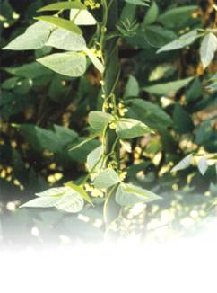
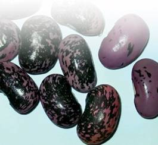

Бобы

Их называют «русские черные бобы». Киевская Русь еще при князе Владимире активно культивировала эту древнейшую культуру, но ее родина – Средиземноморье, откуда, собственно, бобы и попали на Русскую землю, сначала в район Киева. Новая культура сразу начала давать такие неслыханные урожаи, что специально для нее стали строить огромные хранилища.
Из бобов готовили питательные супы и каши. Их собирали недозревшими, чтобы лучше сохранились витамины и ценные белки, содержание которых составляет треть массы боба. Кроме того, в этой культуре содержится 50–60 % легкоусвояемых углеводов. Да и масло в бобовую кашу можно было не добавлять, поскольку в этой культуре жиров тоже очень много.
Если после уборки урожая взвесить растения боба по частям, то на долю зерновой массы семян придется почти половина убранного урожая.
Черные бобы не боятся низких температур, их семена способны прорастать даже при температуре, близкой к 0 °C. Всходы выдерживают заморозки до -6 °C. Оптимальная температура для развития бобов – 18–20 °C. Повышение температуры до 30 °C угнетает рост и формирование семян.
Для нормального развития бобов требуется длинный световой день. С уменьшением длины светового дня сокращается урожайность, задерживается процесс цветения и плодоношения.
В это время растения более всего нуждаются в высокой влажности воздуха и почвы.
Особенно требуется вода семенам в период прорастания, когда потребление влаги превышает массу набухающих семян.

От посева до сбора бобов проходит 3–5 месяцев в зависимости от сорта и условий выращивания.
На плодородных почвах корневая система бобов проникает на глубину до 150 см, обеспечивая надземные части растения достаточным количеством воды и минеральных элементов.
Бобы не выносят затенения, поэтому не следует высаживать их в междурядьях сада или между высокорослыми кустами ягодных и овощных растений.
Лучшими предшественниками бобов считаются пропашные культуры, после возделывания которых почва остается чистой от сорняков. Кислые почвы для бобов совершенно не подходят.
Урожайность семян при температуре 14–25 °C для сорта Русские черные составляет 500-1500 г/м, а сорт Белорусский при такой же температуре возделывания и прочих равных условиях дает значительно больше – 700-2300 г/м.

Семена бобов сохраняют удовлетворительную всхожесть до 5–6 лет.
Для посева почва подвергается глубокой обработке, семена заделывают на глубину не менее 6 см. В средней полосе к посеву следует приступать в начале мая. Сбор бобов начинается в третьей декаде августа – начале сентября.
Чем раньше снимается урожай бобов, тем больше в них оказывается питательных веществ, а содержание аскорбиновой кислоты в недозрелых семенах почти такое же, как в зеленом горошке.
В период активного нарастания листьев растения, высаженные на почве, богатой гумусом, весьма требовательны к фосфорным и калийным минеральным удобрениям.